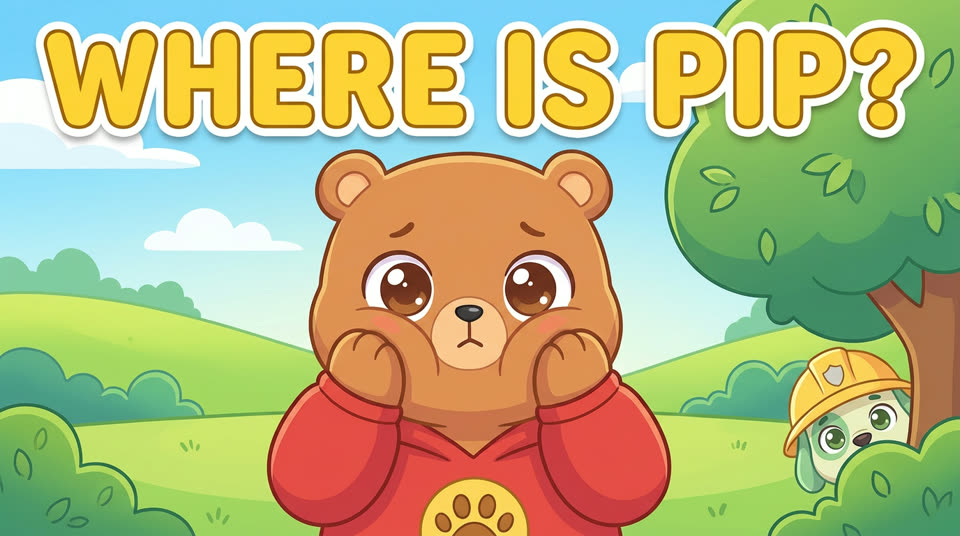
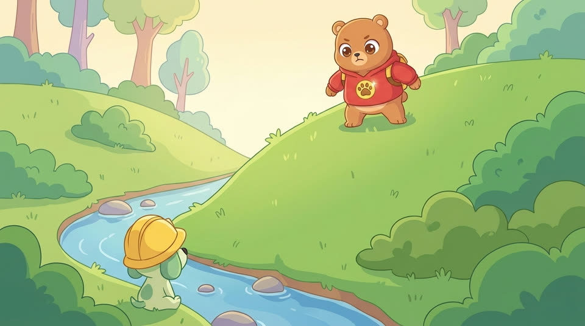
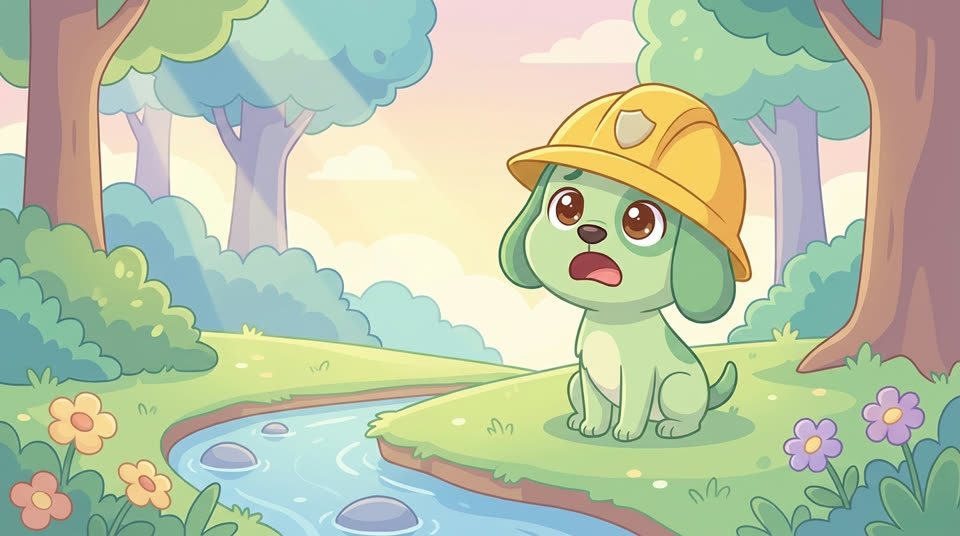
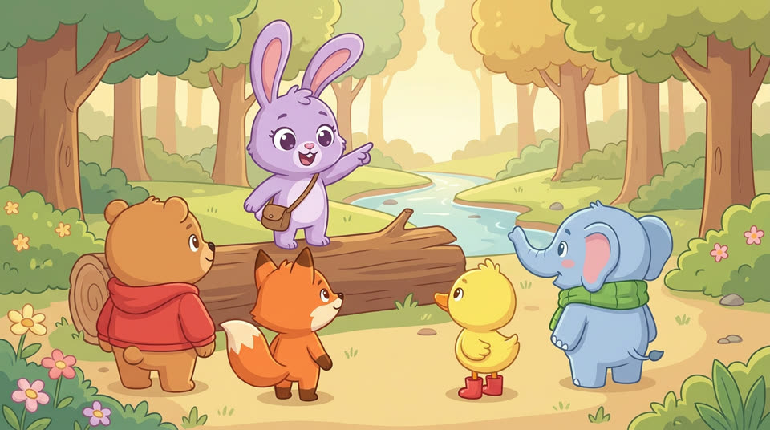
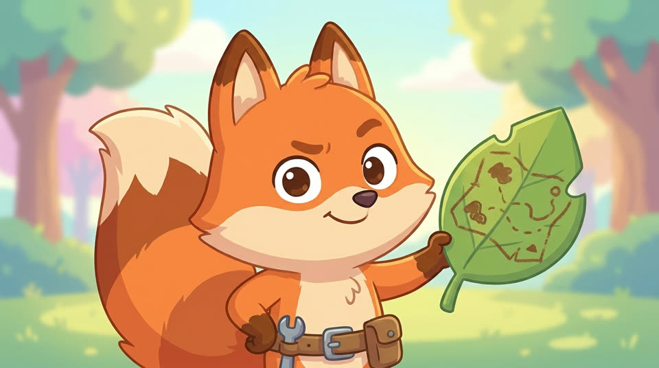
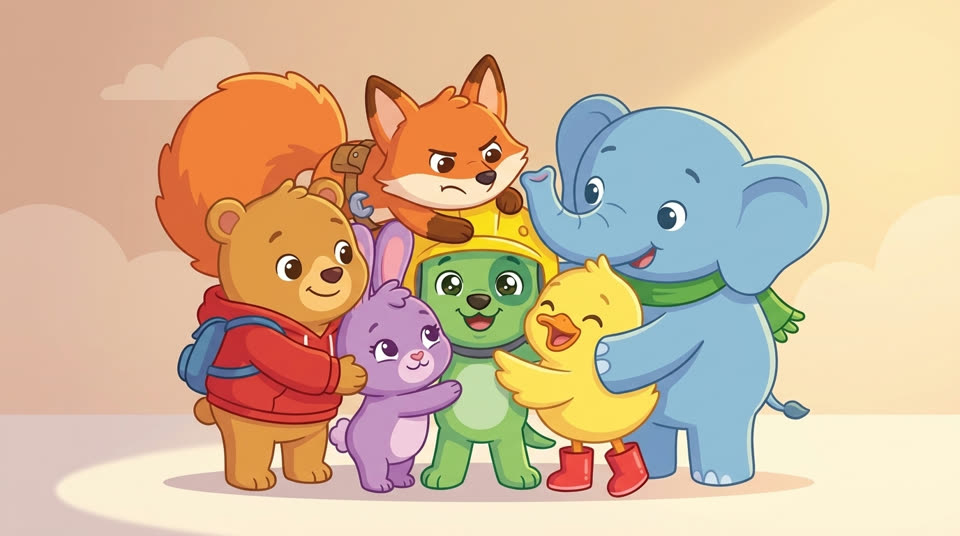

New Episode!

Where Is Pip? 🐶
Pip chased a butterfly and got lost! Badge on, gear on — the Cuddle Crew is coming. A sing-along rescue with a lesson every little one should know: if you're ever lost, stay right there and call away.
Meet the Cuddle Crew

Bruno
The big-hearted bear with the paw-print badge. Brave, warm, and always first to help.

Pip
The zoomiest green puppy in the park. His rescue helmet is always slipping over one eye.

Lulu
The clever purple bunny. One ear up, one ear down, and she spots everything.

Rusty
The fox with a plan and a grumpy face. Don't be fooled: he hugs the hardest.

Sunny
The sunshine duck. Rain boots on, lantern glowing, no dark corner is scary with her around.

Ellie
The gentle blue elephant. Big ears, deep breaths, and the best listener in the whole park.

For Parents
Bruno's Cuddle Crew makes gentle, music-first videos for ages 2 to 6. Every episode is built around one simple idea: kindness, teamwork, staying calm, or staying safe, wrapped in a song your little one will hum all day.
No scares, no shouting, no fast flashing cuts. Just soft colors, warm friends, and lessons that stick.